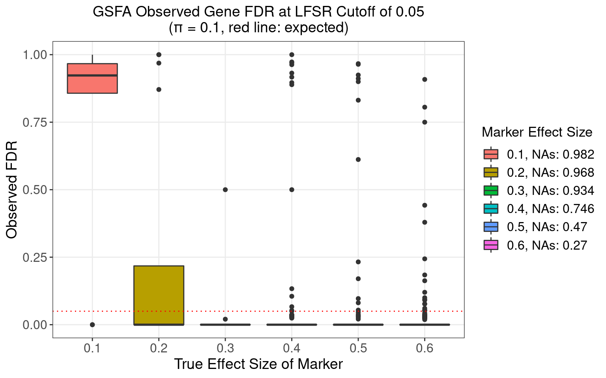

We simulated our data in a bottom-up fashion: \[G_{im} \overset{i.i.d.}{\sim} \text{Bern}(0.2),\hspace{3mm} \Phi_{ik} \overset{i.i.d.}{\sim} N(0, 1) \Rightarrow Z = G \beta + \Phi\] \[ F_{jk} \sim \text{Bern}(\pi_j),\hspace{3mm} U_{jk} \sim N(0, \sigma_w^2) \Rightarrow W = F \odot U\] \[E_{ij} \sim N(0,\psi_j), Z, W \Rightarrow Y = ZW^T+E\] \(G \in \mathbb{R}^{N \times M}, \beta \in \mathbb{R}^{M \times K}, Z \in \mathbb{R}^{N \times K}, W \in \mathbb{R}^{P \times K}, Y \in \mathbb{R}^{N \times P}.\)
For simulation cases in this report,
Sample size \(N = 400\), gene number \(P = 500\), factor number \(K = 10\), and guide/marker number \(M = 6\);
\(\sigma_w^2 = 0.5\), matrix \(\beta\) takes the following form:
The first 6 factors are each associated with a guide, with the effect sizes varying from 0.1 to 0.6, while the last 4 factors are not associated with any guides.
We explored 4 cases when the density parameter \(\pi_j\) is the same across \(j\) but takes a value from 0.1, 0.2, 0.5 to 0.8.
Under each scenario, 500 random datasets were simulated, and both guided and unguided GSFA models were performed on each dataset for 1000 iterations starting from SVD initialization; posterior means were averaged over the last 500 iterations.
We would like to evaluate how different our estimation of the factor matrix, \(\hat{Z}\), is from the true value \(Z\).
On the other hand, since we know the true \(Z\)'s, we can match each of other inferred factors \(\hat{Z}\)'s with the true \(Z\)'s by maximum absolute Pearson correlation.
In terms of our GSFA method, we can estimate the effect of a guide/marker on each gene by summarizing over all the factors through the local false sign rate (LFSR):
For gene \(j\) and guide \(m\), based on the posteriors of \(\beta\) and \(W\) of an inference, \[\text{LFSR}_{mj} = \text{min} \Big\{\text{Pr}(\sum_{k=1}^K \beta_{mk}W_{jk} \geq 0 \text{ | Data}), \text{Pr}(\sum_{k=1}^K \beta_{mk}W_{jk} \leq 0 \text{ | Data}) \Big\}\]
Alternatively, we can simply test each gene directly, measuring whether there is an difference in \(Y_j\) between the two groups of samples under guide \(m\) using Welch's t-test.
To obtain the following ROC curves, we varied the cutoff from 0 to 1 on both LFSR and t-test FDR values.
The actual cutoff values used are (correspond to the datapoints on an ROC curve from left to right)
0, 0.01, 0.05, 0.1, 0.15, 0.2, 0.25, 0.3, 0.35, 0.4, 0.45, 0.5, 0.55, 0.6, 0.65, 0.7, 0.75, 0.8, 0.9, 1
